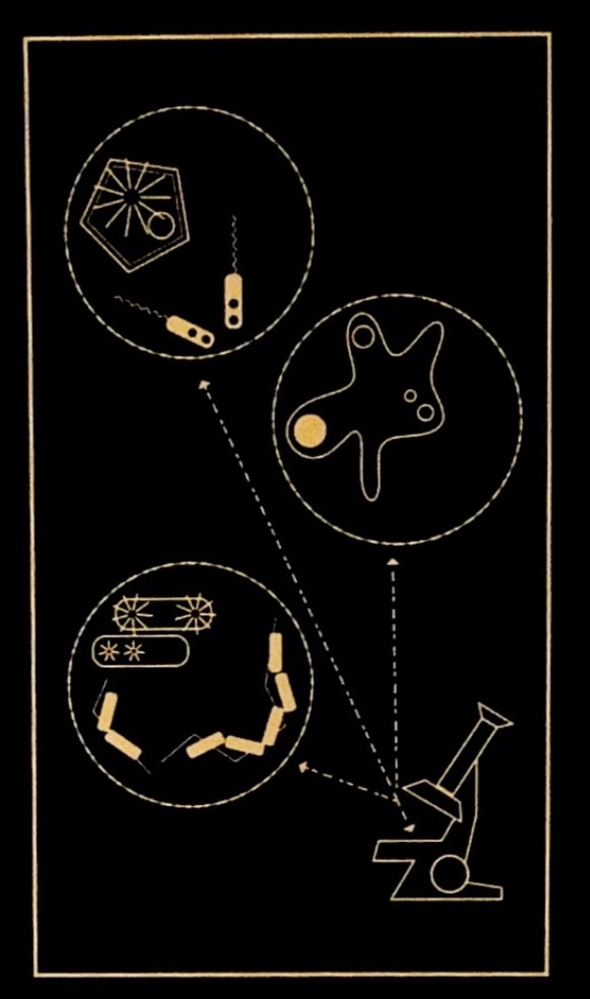
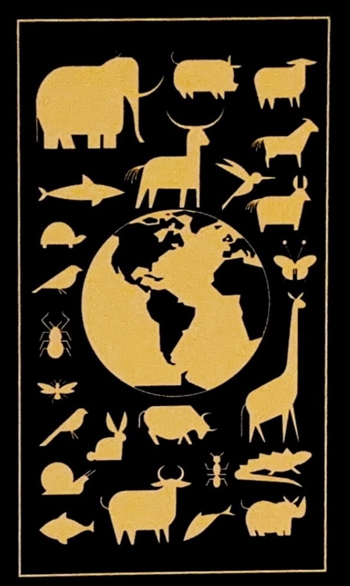

{kind=link}



The sun ✹ is dimming, This project will be the last chance humanity has...
Project Hail Mary aims to build a space craft to reach a star unaffected by Astrophage, collect data about why, and bring back the information in order to implement it on Sol.
Nearby stars have shown to have dimmed as well, the common factor seems to be these dots that were seen by ArcLight probe, that previously has been noticed by Dr. Irena Patrova. Detailed information can be found below.
The sun is dimming, why?
The Petrova Taskforce is the international organization assembled to save Earth from a dimming sun. World governments give former European Space Agency administrator Eva Stratt absolute, unilateral authority to lead the task force and solve the impending extinction-level ice age. The task force recruits top scientists, including molecular biologist-turned-schoolteacher Ryland Grace.
What is the Patrova task force?
The astronauts were picked with a lot of care and attention for this mission. Learn more about the astronauts.
Who are the astronauts going?
What is astrophage and why is it on the surface of the sun?